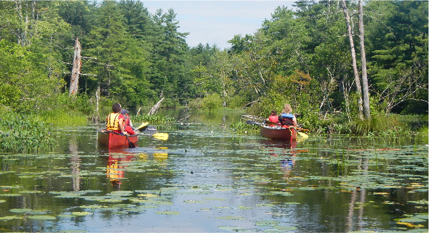

Canoe, Kayak, & SUP Rentals


Rent quality Old Town canoes and kayaks and BIC stand up paddleboards on the beautiful, friendly Nashua River in West Groton, Massachusetts. Launch from our rental site and paddle for hours in either direction! Our friendly rental staff will assist you with your boat, provide paddling and safety tips, give you an idea of what you might see on the river, and share the amazing story of the Nashua River's history. Have fun exploring the main channel of the Nashua, the smaller tributary of the Squannacook, and the pond-like ox bow of Dead River. Each season brings different experiences and sightings. We offer discounted weekday rental rates, season passes, and group discounts. Paddles and life vests included for all ages.
 Rental Options
Rental Options 


*Kid's Kayaks subject to availability.
**Call ahead in spring/fall about SUP rentals.
General Rental Rules
- Liability Release Form must be signed by all participants. Minors (under 18 years) must have our liability release form signed by their parent.
- Person Flotation Device (lifejacket) MUST be worn at all times in boats.
- NO ALCOHOL or other substances which impair judgement.
- PUT-IN CHARGE: $7 for each private boat being launched from our site which is accompanying a rental.
- RESERVATIONS: Recommended for large groups. Not usually needed for individuals- just stop by! If you do reserve, there is a 3-hour minimum rental charge.
- DISCOUNTS: 10% discount to Nashua River Watershed Association members, MTA teachers, and military. See below for GROUP DISCOUNTS.
- BOAT SHUTTLE SERVICE: Available by appointment. (Minimum charge 3 boats)
Ayer, Groton, Pepperell, Townsend: $14/first boat, $9 each additional boat, per trip.
Lancaster, Still River: $22/first boat, $12 each additional boat, per trip.

OFF-SITE RENTAL RULES
- Liability release form must be signed by all participants. Minors (under 18 years) must have our liability release form signed by their parent. Please note that participants not present at time of pick-up must provide signed liability forms in advance.
- Person Flotation Device (lifejacket) MUST be worn at all times in boats.
- NO ALCOHOL or other substances which impair judgement.
- Security deposit will be required on all off-site rentals.
Gift Certificates
Our Gift Certificates are can be used for our canoe, kayak, and SUP rentals, for our Monthly Guided Nature Tours, for our Paddling Instruction Clinics, or for our rental Season Passes. You can order online to recieve a email certificate, or stop by our rental stand to pick up a physical copy.
Season Passes
2018 SEASON PASS TYPES
INDIVIDUAL CANOE: One canoe for passholder. $140
FAMILY CANOE: Two canoes, a passholder in each. $220
INDIVIDUAL CANOE & KAYAK: One solo kayak OR one tandem kayak OR one canoe for passholder. $190
FAMILY CANOE & KAYAK: One solo kayak for each family passholder, a passholder in each. Two passholders may each substitute 1 tandem kayak OR 1 canoe. Base price for two people is $350 plus $100 for each additional passholder, maximum $650 for five or more family members. $350 to $650
INDIVIDUAL CANOE, KAYAK, & STAND-UP PADDLEBOARD: One stand-up paddleboard OR one solo kayak OR one tandem kayak OR one canoe for passholder. $210
SEASON PASS RULES
- Good for 2018 season only.
- Non-transferrable.
- Subject to availability.
- Good for first day of long-term rental. Additional days must be paid at long-term rental rate.
- Not applicable to XL Tripper or specialty boats.
- "FAMILY" includes individual plus spouse plus children up to age 24 living with parents.
- Passholders must bring season pass and present identification to rent boats.
- Liability Release forms must be signed at each rental.
- Use for off-site rentals permissible.
- GUESTS of Season Passholders renting boats receive 10% discount on rentals.
- Passholders receive a 10% discount on Nature Tours.
Group Rental Options
 An outing on the Nashua River is a perfect event for companies, groups and clubs. Paddling down a river brings people together in a new way. The Nashua is a friendly river, a fun and easy paddle for novices. Most group paddles are self-guided. We set you off off with maps, an overview talk about the Nashua River, including picnicking spots and some paddling and safety tips. If you prefer a guided tour, our qualified guide/naturalists can enrich your outing by sharing their experiences and knowledge of the places you'll explore as well as provide expertise in paddling and safety. Another option is to arrange a River Classroom® experience for your group, an educational program to teach your group about the river ecosystem.
SAMPLES OF OUR GROUP TRIP OPTIONS
- 2 - 3 hour round-trip paddle heading upstream from Nashoba Paddler to Dead River to see turtles or continuing further to the Squannacook River to see a beaver dam. Return downstream with the current. Our cheapest and most common option. (No shuttle involved)
- 2 - 3 hour paddle downstream from Nashoba Paddler to Pepperell Pond, ending at a picnic site at the Petapawag canoe launch on Rt. 119. Take some additional time to explore the pond area, if you'd like. (1 shuttle)
- 4 - 5 hour downstream paddle from Ayer to Pepperell with a beautiful, midway picnic stop among the pines. (2 shuttles)
- 4 - 5 hour excursion on the Nashua's tributary, the Squannacook, up to Bertozzi Wildlife Management area for a picnic and back again, for small groups. (2 shuttles)
GROUP DISCOUNTS: 10% discount when renting 6 or more boats.
SPECIAL GROUP DISCOUNTS for CAMPS, SCOUTS, AND SCHOOLS: Call for details.